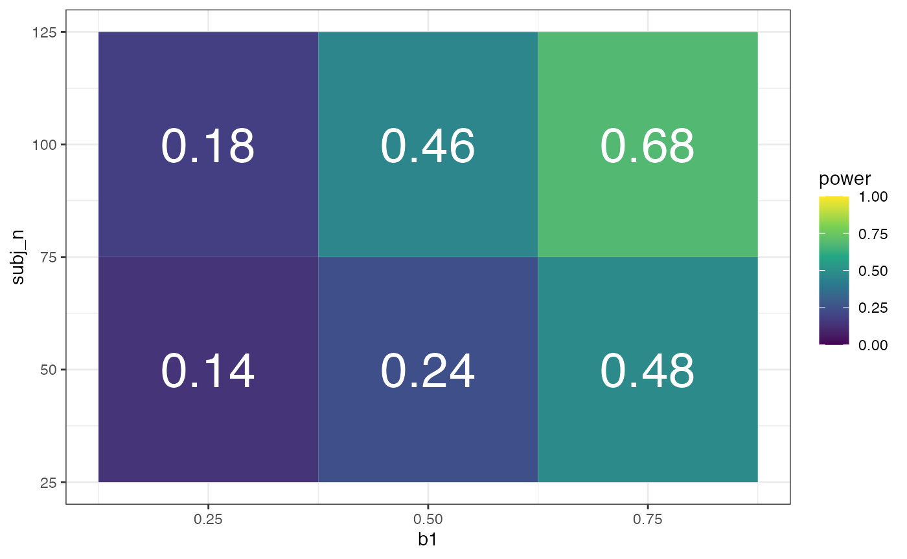

library(dplyr)
library(tidyr)
library(ggplot2)
library(purrr)
library(lme4)
library(lmerTest)
library(broom.mixed)
library(faux)This paper provides a tutorial and examples for more complex designs.
You can build up a mixed effects model by adding random factors in a stepwise fashion using add_random(). The example below simulates 3 schools with 2, 3 and 4 classes nested in each school.
data <- add_random(school = 3) %>%
add_random(class = c(2, 3, 4), .nested_in = "school")| school | class |
|---|---|
| s1 | c1 |
| s1 | c2 |
| s2 | c3 |
| s2 | c4 |
| s2 | c5 |
| s3 | c6 |
| s3 | c7 |
| s3 | c8 |
| s3 | c9 |
A cross-classified design with 2 subjects and 3 items.
data <- add_random(subj = 2, item = 3)| subj | item |
|---|---|
| s1 | i1 |
| s1 | i2 |
| s1 | i3 |
| s2 | i1 |
| s2 | i2 |
| s2 | i3 |
Add within factors with add_within().
data <- add_random(subj = 2) %>%
add_within("subj", time = c("pre", "post"),
condition = c("control", "test"))| subj | time | condition |
|---|---|---|
| s1 | pre | control |
| s1 | pre | test |
| s1 | post | control |
| s1 | post | test |
| s2 | pre | control |
| s2 | pre | test |
| s2 | post | control |
| s2 | post | test |
Add between factors with add_between(). If you have more than one factor, they will be crossed. If you set .shuffle = TRUE, the factors will be added randomly (not in “order”), and separately added factors may end up confounded. This simulates true random allocation.
data <- add_random(subj = 4, item = 2) %>%
add_between("subj", cond = c("control", "test"), gen = c("X", "Z")) %>%
add_between("item", version = c("A", "B")) %>%
add_between(c("subj", "item"), shuffled = 1:4, .shuffle = TRUE) %>%
add_between(c("subj", "item"), not_shuffled = 1:4, .shuffle = FALSE)| subj | item | cond | gen | version | shuffled | not_shuffled |
|---|---|---|---|---|---|---|
| s1 | i1 | control | X | A | 2 | 1 |
| s1 | i2 | control | X | B | 3 | 2 |
| s2 | i1 | control | Z | A | 2 | 3 |
| s2 | i2 | control | Z | B | 1 | 4 |
| s3 | i1 | test | X | A | 3 | 1 |
| s3 | i2 | test | X | B | 4 | 2 |
| s4 | i1 | test | Z | A | 4 | 3 |
| s4 | i2 | test | Z | B | 1 | 4 |
If the levels of a factor don’t have equal probability, set the probability with .prob. If the sum of the values equals the number of groups, you will always get those exact numbers (e.g., always 8 control and 2 test; set shuffle = TRUE to get them in a random order). Otherwise, the values are sampled and the exact proportions will change for each simulation.
data <- add_random(subj = 10) %>%
add_between("subj", cond = c("control", "test"), .prob = c(8, 2)) %>%
add_between("subj", age = c("young", "old"), .prob = c(.8, .2))| subj | cond | age |
|---|---|---|
| s01 | control | old |
| s02 | control | young |
| s03 | control | old |
| s04 | control | young |
| s05 | control | young |
| s06 | control | young |
| s07 | control | young |
| s08 | control | old |
| s09 | test | young |
| s10 | test | young |
If you have more than one between-subject factor, setting them together allows you to set joint proportions for each cell.
data <- add_random(subj = 10) %>%
add_between("subj",
cond = c("control", "test"),
age = c("young", "old"),
.prob = c(2, 3, 4, 1))| subj | cond | age |
|---|---|---|
| s01 | control | young |
| s02 | control | young |
| s03 | control | old |
| s04 | control | old |
| s05 | control | old |
| s06 | test | young |
| s07 | test | young |
| s08 | test | young |
| s09 | test | young |
| s10 | test | old |
You can use the filter() function from dplyr to create counterbalanced designs. For example, if your items are grouped into A and B counterbalanced groups, add a between-subjects and a between-items factor with the same levels and filter only rows where the subject value matches the item value. In the example below, odd-numbered subjects only respond to odd-numbered items.
data <- add_random(subj = 4, item = 4) %>%
add_between("subj", subj_cb = c("odd", "even")) %>%
add_between("item", item_cb = c("odd", "even")) %>%
dplyr::filter(subj_cb == item_cb)| subj | item | subj_cb | item_cb |
|---|---|---|---|
| s1 | i1 | odd | odd |
| s1 | i3 | odd | odd |
| s2 | i2 | even | even |
| s2 | i4 | even | even |
| s3 | i1 | odd | odd |
| s3 | i3 | odd | odd |
| s4 | i2 | even | even |
| s4 | i4 | even | even |
To set up data for analysis, you often need to recode categorical variables. Use the helper function add_contrast() for this. The code below creates anova-coded and treatment-coded versions of “cond” and the two variables needed to treatment-code the 3-level variable “type”. See the contrasts vignette for more details.
You can add_recode() for setting a manual contrast that isn’t available in add_contrast(), such as weighted contrasts.
data <- add_random(subj = 2, item = 3) %>%
add_between("subj", cond = c("A", "B")) %>%
add_between("item", type = c("X", "Y", "Z")) %>%
# add contrasts
add_contrast("cond", "anova", add_cols = TRUE) %>%
add_contrast("cond", "treatment", add_cols = TRUE) %>%
# you can change the default column names
add_contrast("type", "treatment", add_cols = TRUE, colnames = c("Y", "Z")) %>%
add_recode("type", "type.w", X = -1.3, Y = 0, Z = 0.92)| subj | item | cond | type | cond.B-A | cond.B-A.tr | Y | Z | type.w |
|---|---|---|---|---|---|---|---|---|
| s1 | i1 | A | X | -0.5 | 0 | 0 | 0 | -1.30 |
| s1 | i2 | A | Y | -0.5 | 0 | 1 | 0 | 0.00 |
| s1 | i3 | A | Z | -0.5 | 0 | 0 | 1 | 0.92 |
| s2 | i1 | B | X | 0.5 | 1 | 0 | 0 | -1.30 |
| s2 | i2 | B | Y | 0.5 | 1 | 1 | 0 | 0.00 |
| s2 | i3 | B | Z | 0.5 | 1 | 0 | 1 | 0.92 |
To simulate multilevel data, you need to add random intercepts and slopes for each random factor (or combination of random factors). These are randomly sampled each time you simulate a new sample, so you can only characterise them by their standard deviation. You can use the function add_ranef() to add random effects with specified SDs. If you add more than one random effect for the same group (e.g., a random intercept and a random slope), you can specify their correlation with .cors (you can specify correlations in the same way as for rnorm_multi()).
The code below sets up a simple cross-classified design where 2 subjects are crossed with 2 items. It adds a between-subject, within-item factor of “version”. Then it adds random effects by subject, item, and their interaction, as well as an error term (sigma).
data <- add_random(subj = 4, item = 2) %>%
add_between("subj", version = 1:2) %>%
# add by-subject random intercept
add_ranef("subj", u0s = 1.3) %>%
# add by-item random intercept and slope
add_ranef("item", u0i = 1.5, u1i = 1.5, .cors = 0.3) %>%
# add by-subject:item random intercept
add_ranef(c("subj", "item"), u0si = 1.7) %>%
# add error term (by observation)
add_ranef(sigma = 2.2)| subj | item | version | u0s | u0i | u1i | u0si | sigma |
|---|---|---|---|---|---|---|---|
| s1 | i1 | 1 | 1.175 | -2.549 | 0.952 | -1.531 | 1.503 |
| s1 | i2 | 1 | 1.175 | -0.811 | -1.595 | -0.256 | 1.518 |
| s2 | i1 | 2 | -2.014 | -2.549 | 0.952 | -1.407 | 1.174 |
| s2 | i2 | 2 | -2.014 | -0.811 | -1.595 | 3.376 | -0.409 |
| s3 | i1 | 1 | 1.329 | -2.549 | 0.952 | 0.075 | 0.842 |
| s3 | i2 | 1 | 1.329 | -0.811 | -1.595 | -0.687 | 0.828 |
| s4 | i1 | 2 | 0.195 | -2.549 | 0.952 | -0.804 | 2.538 |
| s4 | i2 | 2 | 0.195 | -0.811 | -1.595 | -0.705 | 3.465 |
Now you can define your data-generating parameters and put everything together to simulate a dataset. In this example,subject are crossed with items, and there is a single treatment-coded between-subject, within-item fixed factor of condition with levels “control” and “test”. The intercept and effect of condition are both set to 0. The SDs of the random intercepts and slopes are all set to 1 (you will need pilot data to estimate realistic values for your design), the correlation between the random intercept and slope by items is set to 0. The SD of the error term is set to 2.
# define parameters
subj_n = 10 # number of subjects
item_n = 10 # number of items
b0 = 0 # intercept
b1 = 0 # fixed effect of condition
u0s_sd = 1 # random intercept SD for subjects
u0i_sd = 1 # random intercept SD for items
u1i_sd = 1 # random b1 slope SD for items
r01i = 0 # correlation between random effects 0 and 1 for items
sigma_sd = 2 # error SD
# set up data structure
data <- add_random(subj = subj_n, item = item_n) %>%
# add and recode categorical variables
add_between("subj", cond = c("control", "test")) %>%
add_recode("cond", "cond.t", control = 0, test = 1) %>%
# add random effects
add_ranef("subj", u0s = u0s_sd) %>%
add_ranef("item", u0i = u0i_sd, u1i = u1i_sd, .cors = r01i) %>%
add_ranef(sigma = sigma_sd) %>%
# calculate DV
mutate(dv = b0 + u0s + u0i + (b1 + u1i) * cond.t + sigma)| subj | item | cond | cond.t | u0s | u0i | u1i | sigma | dv |
|---|---|---|---|---|---|---|---|---|
| s01 | i01 | control | 0 | 0.589 | 2.135 | 0.684 | -2.351 | 0.373 |
| s01 | i02 | control | 0 | 0.589 | -0.214 | -0.252 | -0.284 | 0.090 |
| s01 | i03 | control | 0 | 0.589 | 0.947 | -0.151 | 1.802 | 3.337 |
| s01 | i04 | control | 0 | 0.589 | 0.652 | -0.875 | 0.716 | 1.957 |
| s01 | i05 | control | 0 | 0.589 | -0.729 | -1.977 | -1.837 | -1.977 |
| s01 | i06 | control | 0 | 0.589 | -1.050 | 0.238 | -2.644 | -3.105 |
You can analyse these data with lme4::lmer().
m <- lmer(dv ~ cond.t + (1 | subj) + (1 + cond.t | item), data = data)
summary(m)
#> Linear mixed model fit by REML. t-tests use Satterthwaite's method [
#> lmerModLmerTest]
#> Formula: dv ~ cond.t + (1 | subj) + (1 + cond.t | item)
#> Data: data
#>
#> REML criterion at convergence: 421
#>
#> Scaled residuals:
#> Min 1Q Median 3Q Max
#> -1.94554 -0.66137 0.03661 0.66655 2.39501
#>
#> Random effects:
#> Groups Name Variance Std.Dev. Corr
#> subj (Intercept) 0.3239 0.5691
#> item (Intercept) 0.7649 0.8746
#> cond.t 1.1253 1.0608 -0.66
#> Residual 3.2817 1.8115
#> Number of obs: 100, groups: subj, 10; item, 10
#>
#> Fixed effects:
#> Estimate Std. Error df t value Pr(>|t|)
#> (Intercept) -0.05392 0.45486 9.66296 -0.119 0.908
#> cond.t -0.58770 0.61102 9.08258 -0.962 0.361
#>
#> Correlation of Fixed Effects:
#> (Intr)
#> cond.t -0.690Include this code in a function so you can easily change the Ns, fixed effects, and random effects to any values. Then run a mixed effects model on the data and return the model.
sim <- function(subj_n = 10, item_n = 10,
b0 = 0, b1 = 0, # fixed effects
u0s_sd = 1, u0i_sd = 1, # random intercepts
u1i_sd = 1, r01i = 0, # random slope and cor
sigma_sd = 2, # error term
... # helps the function work with pmap() below
) {
# set up data structure
data <- add_random(subj = subj_n, item = item_n) %>%
# add and recode categorical variables
add_between("subj", cond = c("control", "test")) %>%
add_recode("cond", "cond.t", control = 0, test = 1) %>%
# add random effects
add_ranef("subj", u0s = u0s_sd) %>%
add_ranef("item", u0i = u0i_sd, u1i = u1i_sd, .cors = r01i) %>%
add_ranef(sigma = sigma_sd) %>%
# calculate DV
mutate(dv = b0 + u0s + u0i + (b1 + u1i) * cond.t + sigma)
# run mixed effect model and return relevant values
m <- lmer(dv ~ cond.t + (1 | subj) + (1 + cond.t | item), data = data)
broom.mixed::tidy(m)
}Check the function. Here, we’re simulating a fixed effect of condition (b1) of 0.5 for 50 subjects and 40 items, with a correlation between the random intercept and slope for items of 0.2, and the default values for all other parameters that we set above.
sim(subj_n = 50, item_n = 40, b1 = 0.5, r01i = 0.2)
#> # A tibble: 7 x 8
#> effect group term estimate std.error statistic df p.value
#> <chr> <chr> <chr> <dbl> <dbl> <dbl> <dbl> <dbl>
#> 1 fixed <NA> (Intercept) -0.0715 0.286 -0.250 71.4 0.803
#> 2 fixed <NA> cond.t 0.499 0.395 1.27 68.1 0.210
#> 3 ran_pars subj sd__(Intercept) 1.19 NA NA NA NA
#> 4 ran_pars item sd__(Intercept) 0.913 NA NA NA NA
#> 5 ran_pars item cor__(Intercept).… 0.256 NA NA NA NA
#> 6 ran_pars item sd__cond.t 1.16 NA NA NA NA
#> 7 ran_pars Residu… sd__Observation 2.08 NA NA NA NARun the simulation repeatedly. I’m only running it 50 times per parameter combination here so my demo doesn’t take forever to run, but once you are done testing a range of parameters, you probably want to run the final simulation 100-1000 times. You might get a few warnings like “Model failed to converge” or “singular boundary”. You don’t need to worry too much if you only get a few of these. If most of your models have warnings, the simulation parameters are likely to be off.
x <- crossing(
rep = 1:50, # number of replicates
subj_n = c(50, 100), # range of subject N
item_n = 25, # fixed item N
b1 = c(0.25, 0.5, 0.75), # range of effects
r01i = 0.2 # fixed correlation
) %>%
mutate(analysis = pmap(., sim)) %>%
unnest(analysis)Filter and/or group the resulting table and calculate the proportion of p.values above your alpha threshold to get power for the fixed effects.
# calculate power for alpha = 0.05
filter(x, effect == "fixed", term == "cond.t") %>%
group_by(b1, subj_n) %>%
summarise(power = mean(p.value < .05),
.groups = "drop") %>%
ggplot(aes(b1, subj_n, fill = power)) +
geom_tile() +
geom_text(aes(label = sprintf("%.2f", power)), color = "white", size = 10) +
scale_fill_viridis_c(limits = c(0, 1))